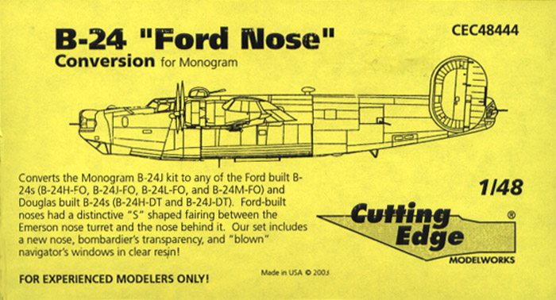
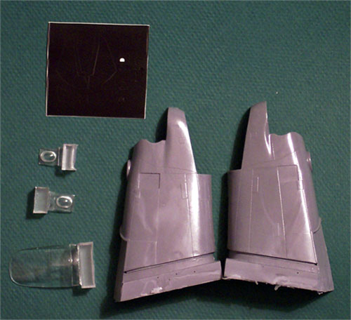

1/48 Cutting Edge B-24 Ford Nose Conversion

Text and photo Copyright � 2003 by Matt Swan

����� This is Cutting Edge Modelworks offering to convert the Monogram 1/48 scale B-24J into any of the various Ford Nose versions. For those of you that do not understand what the significance of the Ford Nose is it simply means that the area where the fuselage meets the forward gun turret bears an �S� shape and the lower bombardier�s window is of a slightly different shape. This is a fairly visible difference and the Monogram kit definitely lacks it. The CE kit is all resin and includes both a left and right half done in dark gray resin and three windows in clear resin. The lower bombardier�s window and two blown side windows are included. Also included is a set of Black Magic masks for the new bombardier�s window. The fuselage halves are well formed but feature engraved panel lines. Anyone familiar with the Monogram kit may recall that it features all raised panel lines. This will force the modeler to either engrave the entire kit or fill the engraved lines on the conversion and install raised lines � neither option is going to be a lot of fun.
����� To complete the conversion the modeler will have to trim about 1/16 of an inch from each side of the Monogram kit cockpit floor. The conversion is designed to utilize the Monogram kit A-15 nose turret even though it is about 15% too large in diameter for a true scale turret. For an MSRP of $27.99 USD I�m not sure if I�m real happy with the set.